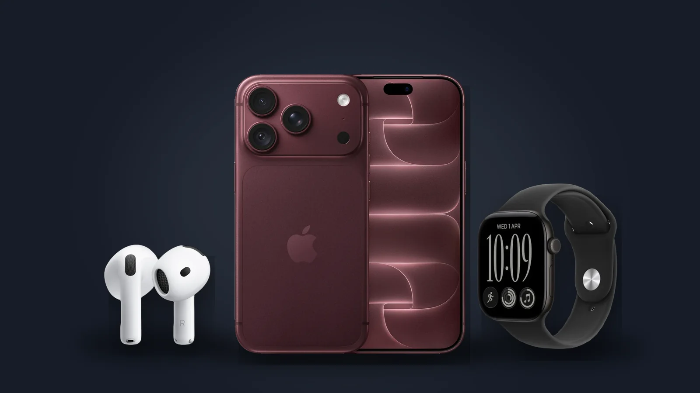

What Apple showed on 9 September: iPhone 18 Pro, the foldable iPhone Duo, new Watches and AirPods 5
Apple's “Surprise and shine” event was the first under its new CEO, John Ternus. Here is what was announced, and what it costs in Armenia today.

A new CEO on stage
John Ternus, who led Apple's hardware engineering, became chief executive on 1 September; Tim Cook is now executive chairman of the board. The event in Cupertino on 9 September was his first launch.
iPhone 18 Pro and iPhone 18 Pro Max
- The A20 Pro chip, made on a 2 nm process, with a new vapor chamber that holds its performance for longer.
- A 48 MP main camera with a variable aperture, from f/1.48 to f/4, a first for iPhone.
- Longer battery life: Apple rates the 18 Pro at up to 36 hours of video and the Pro Max at up to 45.
- A smaller Dynamic Island that shows up to three Live Activities at once.
- 2 TB of storage now on the smaller Pro as well, and four colours: burgundy, glacier, silver and black.
In the US they start at $1,199 and $1,299, $100 more than last year. In Armenia today: iPhone 18 Pro from 569 000 ֏, iPhone 18 Pro Max from 669 000 ֏.
iPhone Duo, the first foldable iPhone
A 5.4-inch screen outside and a 7.6-inch screen inside; opened, it is the thinnest iPhone yet. It starts at $1,999 in the US and goes on sale in October. It is not sold in Armenia yet.
No regular iPhone 18 this autumn
Apple did not show a standard iPhone 18. Reports say the more affordable models move to spring 2027, so the iPhone 17 stays the current base model.
Apple Watch and AirPods
- Apple Watch Series 12, from $399: a new health-sensing system with larger ECG electrodes, and the ceramic case returns.
- Apple Watch Ultra 4, from $799.
- AirPods 5, from $129: active noise cancellation on both models, and Live Translation.
In Armenia today: Watch Series 12 from 194 900 ֏, Watch Ultra 4 from 384 900 ֏, AirPods 5 from 69 900 ֏.
Sources: Apple Newsroom: iPhone 18 Pro and iPhone 18 Pro Max · Apple Newsroom: iPhone Duo · Apple Newsroom: John Ternus to become CEO · MacRumors: September 9 event · Benzinga: AirPods 5, Watch Series 12 and Ultra 4
24.09.2026